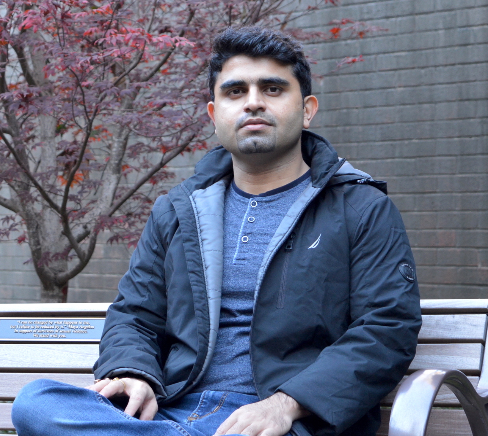

|
Varun DagarMasters of Science (Computer Science), Georgia Institute of TechnologyEmail: Formerly R&D Software Engineer - 3, Broadcom Inc., Bangalore, India I am Computer Science Master's student graduating in December 2020. I have 7 years of professional experience of develop software for Multimedia Embedded products targeted for Advanced Driver Assist Technologies and Broadcast Streaming servers. My areas of interest include Embedded Systems, System Software and Machine Learning. |
 |